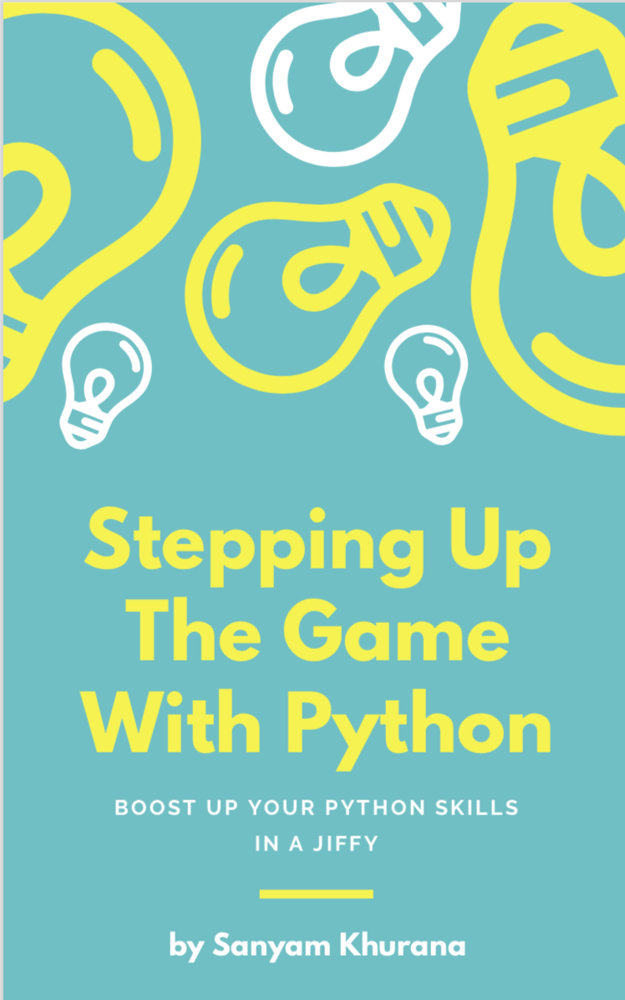

"Stepping Up Your Game With Python" is an intermediate/advanced level book that is being written (ideally for someone) who've learned the basic syntax of Python programming language and is able to build small applications for automating their day-to-day activities. I hope this book should help programmers of all levels in learning something new.
I'm still early in my programming career. It is often said that you go from Apprentice to journeyman and sometimes become a master in a particular field. I treat myself as a journeyman who is on his way to becoming a software craftsman.
I've been involved with the Python community for several years and mentoring students to get started with FOSS. I've been fortunate enough to be collaborating with some of the best Engineers in the Software Industry through Open Source and I owe my learning to them.
I mentored for GSoC with Debian and bug triager for CPython. I've been also featured in Mozilla credits.
All the chapters will be 5-15 minutes long so that they're easy to grasp. I'm trying to make them as crisp as possible to cover some of the amazing tools Python standard library provides us and help all of us to leverage the power of Python (Yay!). Readers can then further explore the topic ;)
Here is a list of current topics that are planned to be covered:
This book is currently in progress and will be available before 2019 end 2021 end (I've been busy with something that is not public yet, but I'll be definitely releasing this in 2021). If you want to get an update once I have got the alpha version out (and would like to be the first one to be informed & help in making it better!), please fill in your email address below. (Oh, and I can assure, there will be no spamming ever!)